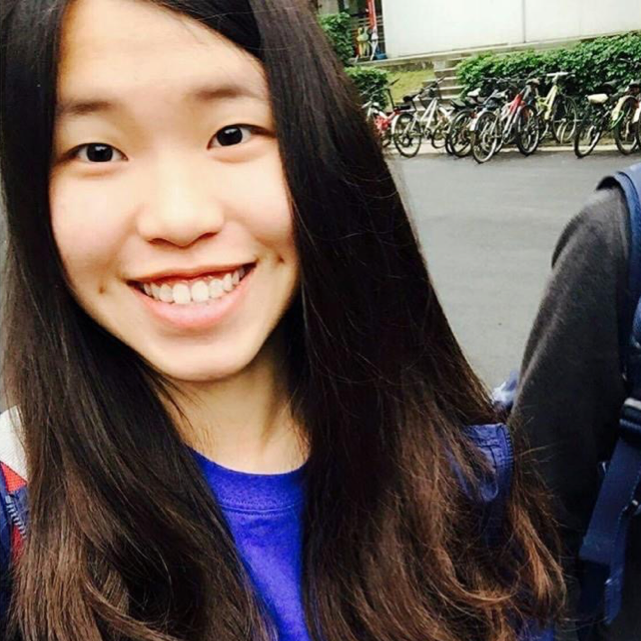

公司職員簡介
姓名 : 朱桂玉
職稱 : 2016假日營劇三負責人
入社年份 : 2015-2017
特殊表現 : 原文最苗條
員工表現

祈瑋
大一第一個原文的就是假日營了，謝謝你們那時侯那麼用心的帶我們，讓我們有滿滿的感動，劇三之後還要再約喔~畢業快樂
依潔
第一個假日營劇三的股長，美膩的景美大姐姐，雖然之後很少見面了，但緣分還是默默的持續到了公演在服化間的吵吵鬧鬧，很幸運原文的第一塊拼圖是你，偶會想你的，畢業快樂。
馬
德文好夥伴，我們下學期還要一起看春長爺爺喔！Viel Glück！
可綠
每次看到你吃好吃的東西就會滿臉幸福的樣子就覺得你好可愛<3 謝謝你在劇三的照顧,愛你!桂玉畢業快樂!
宥儒
一直以來都覺得自己很幸運在原文的第一次活動就遇到劇三，因為妳跟姿淳還有紹豪，我才能留下這麼多感動，謝謝! 畢業快樂!
張宸寧
很開心原文從劇三開始，謝謝桂玉，祝你之後順順利利
源芳
原文裡我最喜歡的股大概就是劇三了吧!謝謝你和姿淳紹豪在我們第一次離家讀書的時候就給了我們一個和家一樣溫暖的地方，真的超愛劇三!回想起來還是滿滿的快樂回憶XD辛苦你們了~~畢業快樂喔!
斈恩
桂玉子，跟你不熟的時候覺得你就是個溫柔大姊姊，很喜翻你。認識你之後發現你根本超怪，就沒那麼喜翻你了(開玩笑的<3)愛你唷桂玉，希望以後還能常常在學校碰到你，也希望你能偶爾想起我帶給你蘇胡的刷具們然後順便想起我QWQ畢業快樂研究所加油！